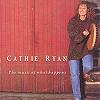

Celtic Lyrics Corner > Artists & Groups > Cathie Ryan > The Music Of What Happens > A Mháithrín, A' Leigfeá 'Un Aonaigh Mé?
|  | A Mháithrín, A' Leigfeá 'Un Aonaigh Mé? |
| Credits : | Traditional; arranged by Cathie Ryan |
| Appears On : | The Music Of What Happens |
| Language : | Gaeilge (Irish Gaelic) & English |
| Other Versions : |
"
Beidh Aonach Amárach
" on Altan's album Another Sky
" Beidh Aonach Amárach " on The Cassidy's album Singing From Memory |
Lyrics :
Chorus:
A mháithrín, a' leigfeá 'un an aonaigh mé?
Oh mother, will you let me go to the fair?
A mháithrín, a' leigfeá 'un an aonaigh mé?
My dearest dear, I do not dare
Beidh aonach i mbárach i gConndae an Chláir
A fair tomorrow in County Clare
Beidh aonach i mbárach i gConndae an Chláir
What good is it to me? I won't be there
(Chorus)
Nil tú a deich ná a h-aon déag fós
You're not ten or eleven yet
Nil tú a deich ná a h-aon déag fós
But when you're thirteen you'll be let
(Chorus)
Tá mé i ngrá le gréasaí bróg
I'm in love with the shoemaker
Tá mé i ngrá le gréasaí bróg
If I don't get him, I won't live
B'fhearr liom féin mo ghréasaí bróg
I prefer my shoemaker
B'fhearr liom féin mo ghréasaí bróg
To an army captain with lace and frills
(Chorus)
Beidh aonach i mbárach i gConndae an Chláir
A fair tomorrow in County Clare
Beidh aonach i mbárach i gConndae an Chláir
What good is it to me? I won't be there
(Chorus 2x)